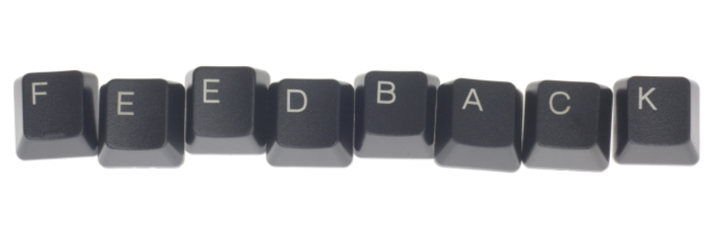

Throughout Phase 0, we've been asked to give feedback to our peers. This has definitely been a good exercise for me, since I tend to gloss over things and not give specific and actionable feedback to others. I have a hard time criticizing others and pointing out things they need to work on. However, throughout phase 0, I've found that for feedback I've personally received, I've most appreciated the feedback with honest, actionable criticism. I'd rather hear honest criticism from others than be told 'everything went great! No comments.' As such, I've tried to ensure that the feedback I give others is indeed actionable. If I simply leave feedback for others that says 'You're great! Had an awesome time pairing', I'm not helping them develop in any way. Conversely, actionable feedback gives my peers a way to develop their skills and focus on things they can do better. In addition, I like to give both positive AND negative feedback to my peers. Letting a peer know that you really enjoyed the way he or she communicated, or how he or she handled a tough situation, can help ensure that those behaviors will continue in the future.
As far as live feedback goes, I think I will apply the same principles that I applied when giving feedback on Feedbackinator. I also feel that eye contact is important when giving live feedback, so that you're able to accurately gauge your peer's response to your comments. Finally, when giving live feedback, I'll ensure that I give my peers time to respond to my comments. The whole purpose of giving feedback is to help your peers better themselves, so it's naturally important to understand how they are processing and responding to feedback they receive.
